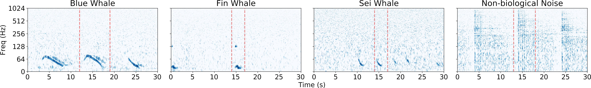
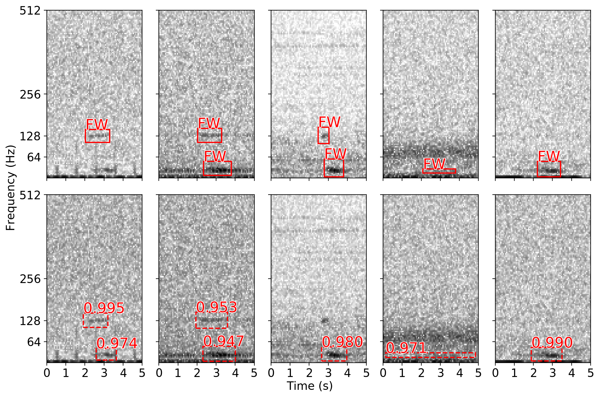
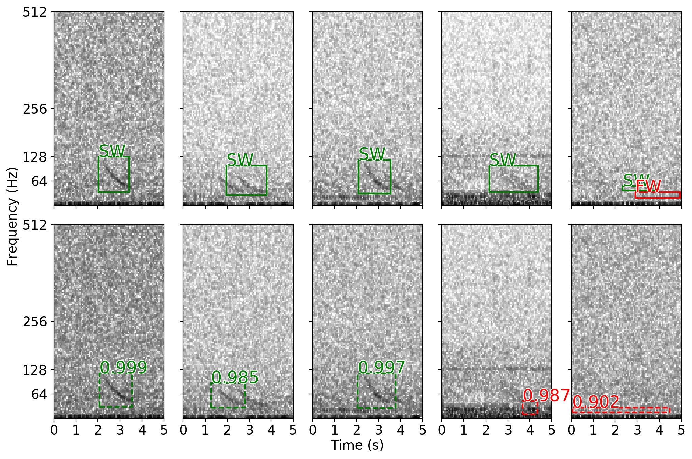

of
MERIDIAN Workshop — Victoria, BC — November 21, 2019
Detecting endangered baleen whales within acoustic recordings using R-CNNs, and how I got here...
Mark Thomas
Dalhousie University & JASCO Applied Sciences
Some background...
In late 2017/early 2018 I started working for JASCO on a detection and classification algorithm using ConvNets.
MammalNet:
- no detection involved → classify vocalizations to different species using pre-extracted contours
- eleven classes: beluga, blue, bowhead, fin, humpback, minke, right, and sei whales + walruses and bearded seals
- shallow ConvNet developed in Tensorflow: 3 convolutional layers + 2 fully connected layers
😴 OK results, but can we cut out the contour detector?
Some (continued) background...
MammalNet v2: more net, fewer mammals
- trained on spectrograms instead of extracted contours
- to do more we need to turn it down from 11
-
fewer species: blue, fin, and sei whales + non-biological noise & ambient noise examples

🤔 is this really doing "detection"?
MammalNet v3: triple the v's, triple the nets
- there have been huge advancements to the SOTA in object detection/semantic segmentation:
- in the frequency domain, marine mammal vocalization detection is more or less the same task!
- for v2 we had full bounding box annotations, but we only used the start/end times
- the underlying (neural net) architecture of v3 is Mask R-CNN [3]
screenshots taken from arXiv.org
MammalNet v3 (continued)... 2/3
Mask R-CNN is composed of three nets:
1. the feature extraction net
TODO: explain the backbone net and FPN
2. the region proposal net
TODO: explain the RPN and RoI Align
3. the head net
TODO: explain bounding box regr, etc.
MammalNet v3 (continued)... 3/3
...
Acoustic recordings
Training details
A few training details...
- Each CNN was trained using a batch size of 128
- stochastic gradient descent (SGD) was used as an opt. routine
- The initial learning rate was set to 0.003 and decayed by a factor of 10 after learning plateau'd
Experimental results
| species | label | instances | APIoU=0.5 | mAP[.5:.95] | ARIoU=0.5 | mAR[.5:.95] |
|---|---|---|---|---|---|---|
| overall | - | 2813 | 82.1 | 41.8 | 91.9 | 54.8 |
| blue whales | BW | 487 | 85.7 | 52.8 | 96.2 | 70.9 |
| fin whales | FW | 2099 | 75.3 | 30.8 | 89.9 | 40.0 |
| sei whales | SW | 227 | 85.4 | 41.9 | 89.7 | 49.4 |
* metrics are as described in the COCO Detection Challenge
Experimental results (cont.)
Experimental results (cont.)
Experimental results (cont.)
Experimental results (cont.)
R-CNN detections for a recent recording from the Gaspé recorded in September 2019

Future work I'm doing now
- semi-supervision for overcoming the partially labelled data problem
- unsupervised learning of acoustic signatures
- interpretability methods for CNNs trained on acoustic data
Thanks × 253 to my colleagues at JASCO and Dalhousie
-
Dr. Stan Matwin
-
Dr. Bruce Martin
-
Katie Kowarski
-
Briand Gaudet
stills taken from "The Life Aquatic with Steve Zissou". Wes Anderson. Buena Vista Pictures, 2004
Thank you for listening!
References
-
Title of the article
A. One, A. Two, and A. Three
Journal Name, pp. a–b, (Year)